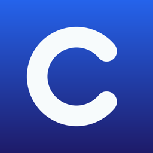

Veridion LLC is a digital studio with two halves. We produce AI-native short-form video for TikTok and YouTube, and we build applications for iOS, macOS, Android and Windows. Both halves run on the same rule: say plainly what a thing is, and never claim more than it does.
AI-GENERATED PRESENTERS · ALWAYS DISCLOSED · NEVER FINANCIAL ADVICEThree daily and weekly shows built around real financial news, with AI-generated presenters who are disclosed as such on every platform and every post. The delivery is produced; the facts never are. Every number is verified against its source before air.
See the shows ↓Small tools that each do one job: a focus timer for ADHD, an SSH and SFTP client, a monitor for local AI workloads on Apple Silicon, field reporting for HOA boards, and an arcade game. Every one says what it does and what it collects — usually nothing.
apps.veridion-llc.com →Three shows, one standard: the delivery is produced; the facts never are.
The day's biggest real stock story, delivered by a dog who takes it all very, very seriously. Anchored by Basil, a red merle Australian Shepherd with a fictional portfolio and no patience for market nonsense — with rookie co-anchor Abba at his side.
dnn.veridion-llc.com →One top financial story a day: the story, the hard numbers, and why it matters. A four-anchor desk led by Maeve Sterling. Every number is drawn from the day's reporting, verified against the source before air, and cited on every post.
brief.veridion-llc.com →A dog and a cat talk the week's actual news, unfiltered. Rally believes in everything; Chairman Meow believes in nothing; something gets slid off the desk either way. The edge punches at institutions, never at people.
leash.veridion-llc.com →The takes that didn't air. Basil was mid-headline — then the anchor chair was empty and spinning. Members know why. Signing in takes ten seconds and costs nothing.
Enter the screening room →Five shipped, across four platforms.

A countdown already on screen so you never have to go looking for it, one step shown instead of a list, and a keystroke that takes whatever just interrupted you. No account, no server, nothing collected. It is a focus timer, not a medical device.
curo.veridion-llc.com →Alongside SSH Terminal & SFTP, Studio Sentinel, Revenge of the Worm and HOA Board — see all five →